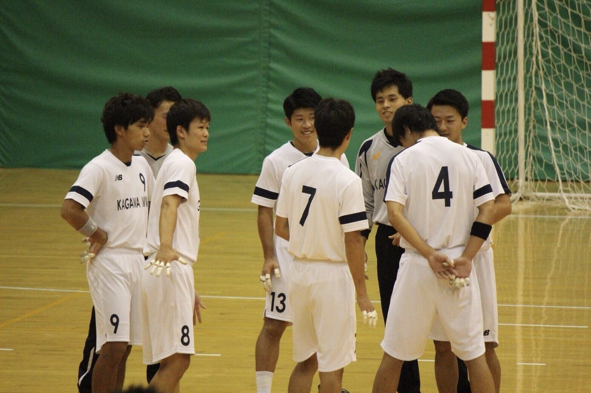
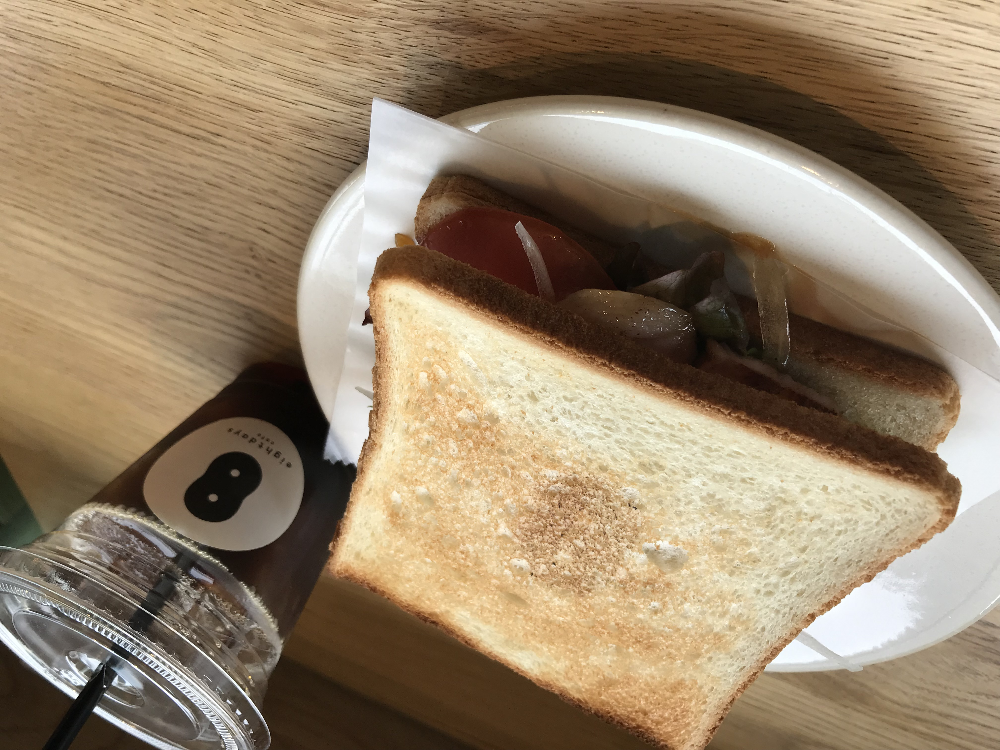

About
-

高校生の時にハンドボールを始め、大学生になっても部活に入り続けていました！
大学４回生の最後の大会の際の写真です。 -
 みずほ証券（株）に新卒で19年4月に入社しました。
みずほ証券（株）に新卒で19年4月に入社しました。
営業として新規開拓に取り組んでいます。
こんにちは！都内で証券会社に勤めている森永 雅大と申します！岡山県出身で大学は香川大学だったのですが、支店配属が都内になり19年の4月に上京しました。
学生の頃は、ハンドボール部に所属しており週4日以上の練習を４年間、最後までやり抜きました！また、キャプテンの経験もさせてもらい、チームの課題は何か、それを克服するためにどうすれば良いかということを常に考えながら練習に取り組みました。
幼い頃から負けず嫌いで、自分が「負けたくない」と感じたもの（部活のレギュラー争いや、好きな教科の勉強など）に対しては、結果を残せるように努めてきました。この性格もあってか、日々自分を成長させることのできる環境に身をおきたいと考えています。
Job
-
東京という大きなマーケットで新規開拓に取り組んでいます！
大口案件を決められるように戦略を立てながら取り組んでいます。 -
 エンジニアへの転職をしたいと考えています！
エンジニアへの転職をしたいと考えています！
それに向けて現在勉強中です。
2019年4月にみずほ証券（株）に入社しました。都内の支店配属になり、東京という大きなマーケットの中で法人やそのオーナー・社長を主なターゲットとした新規開拓に取り組んでいます。
新規開拓に取り組む際には、「戦略」ということを意識しながら取り組んでいます。アプローチの数だけではなく、そこに「ターゲティング」という要素も意識しながら新規開拓に取り組んでいます。
現在はまだ、資金導入や商品販売という形で結果としては出てきてはおりませんが、大口の案件をいくつか見つけることができました。今期中に刈り取れるように今後も取り組んでいきます！
また、自分の将来を考えていく中で、より成長性のある業界に身を置き、自分を成長させたいたいと考え始め、エンジニアへの転職を考えています。
現在は独学であったり友人に教えてもらいながらであったりで転職に向けた準備をしており、将来的にはブロックチェーンに魅力を感じているのでその業界に携わっていきたいと考えています。
Hobby
-

自宅の近くのカフェのモーニングです。
美味しいコーヒーを飲みながらよく作業をしたり読書をしたりしています。 -
 学生の頃に大好きなアーティスト、「WANIMA」のライブに行きました。
学生の頃に大好きなアーティスト、「WANIMA」のライブに行きました。
カフェに行ったり、スポーツをしたり、音楽を聴いたりと色々趣味があります。
上の写真（左）は自宅の近くのカフェなのですが、落ち着いた雰囲気で美味しいコーヒーを飲みながらよく作業や読書をしています。
たまごサンドがモーニングで大好きなメニューだったのですが、最近無くなってしまい少しショックを受けています、、笑
音楽を聴くのも好きで、大好きなアーティストの「WANIMA」のライブに学生の頃行きました（写真右）。自分の好きな歌を歌って盛り上がれたのでより一層好きになりました。
「WANIMA」以外にもよく邦楽のロックバンドをよく聴きます。
また、スポーツをするのも大好きなので、休みの日には会社の人たちとフットサルをしたり、別のコミュニティで学生の頃にやっていたハンドボールをしたりしています。
スポーツは観るのも大好きなので、よくサッカー観戦をしたり、野球観戦をしたりしています。